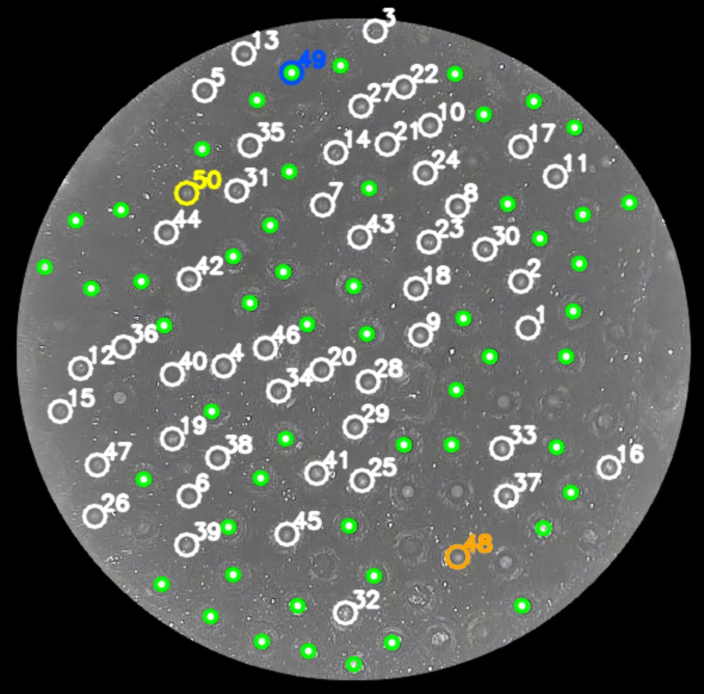
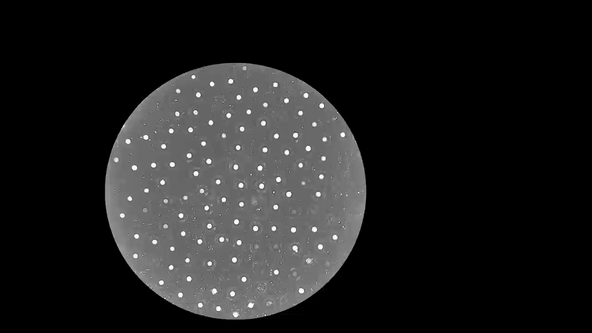
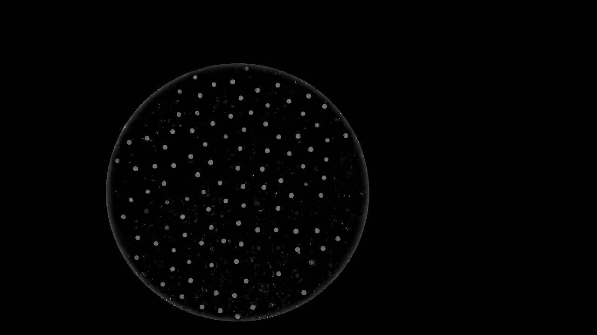
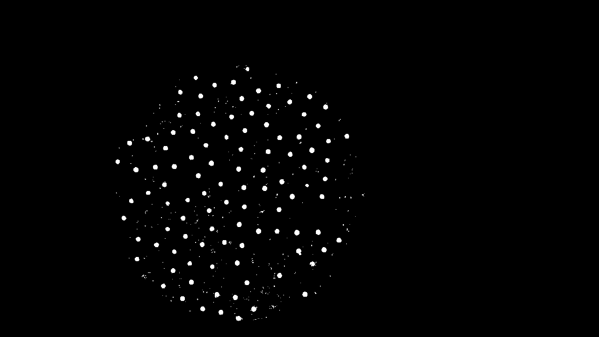
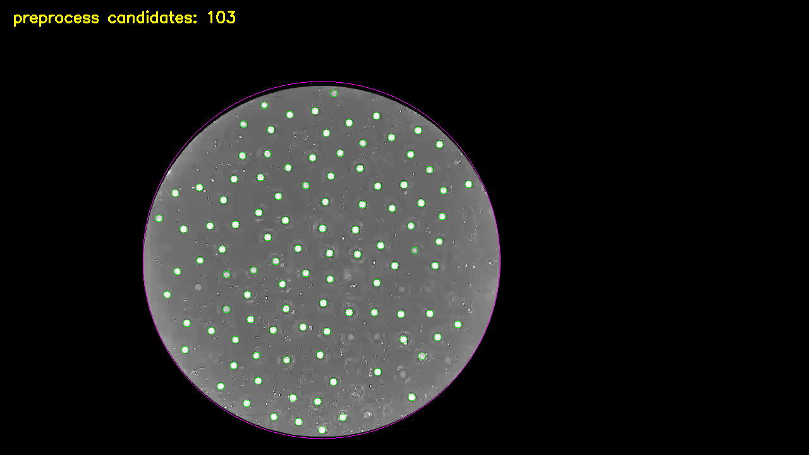
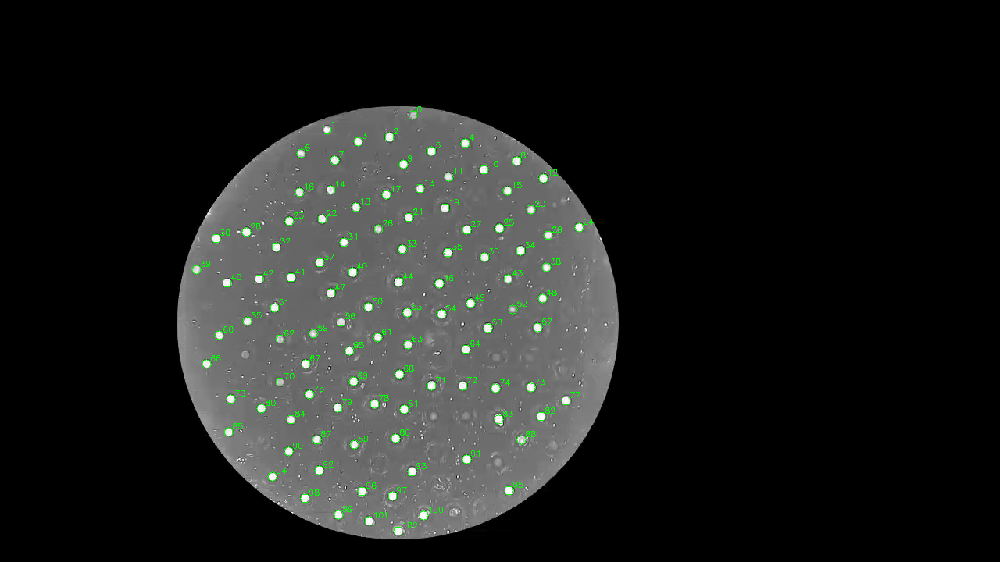
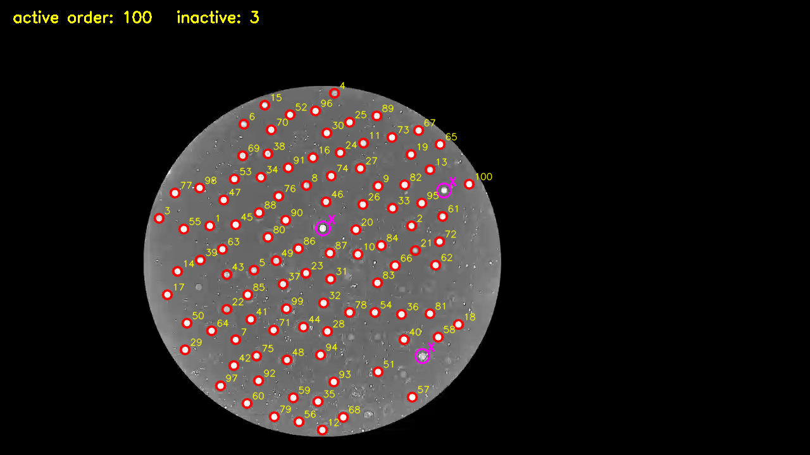
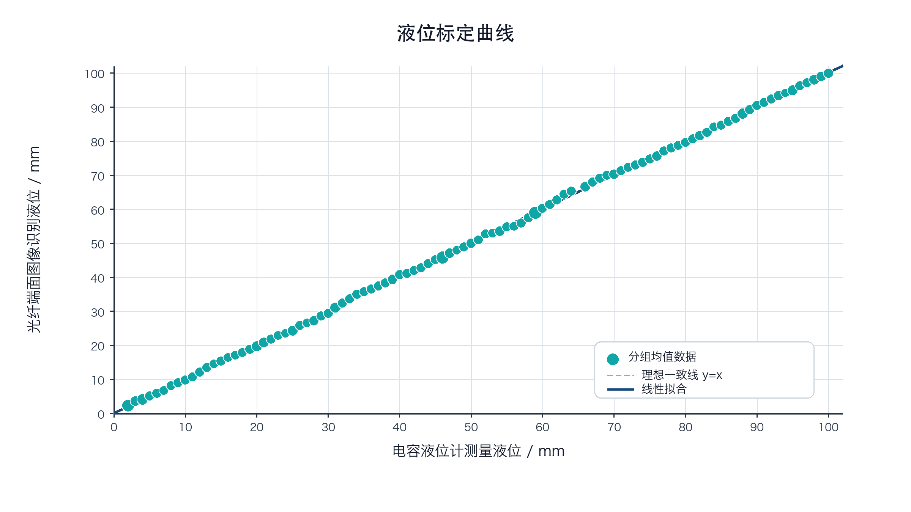

Bachelor thesis · Computer vision
Seeing liquid level
through fiber.
A low-cost sensing approach that turns the reflected light from a fiber array into a stable, real-time liquid-level signal.
Explore the method
Python · OpenCVCCD image processing
THESIS FIG. 3–20

State recognition
01 / The challenge
One image.
One hundred signals.
Uneven illumination, local reflections and different initial brightness levels make a single global threshold unreliable. The system instead locates each fiber, establishes its own baseline, and tracks relative brightness over time.
02 / Sensing principle
From a physical change
to a visible state.
When a fiber end face moves from air into liquid, the refractive-index boundary changes. Its Fresnel reflection becomes weaker, so the bright spot captured by the CCD dims.
Higher reflection
A brighter end-face response establishes the channel baseline.
Lower reflection
The brightness drop becomes a discrete liquid-level state.
Selected to strengthen grayscale response under the CCD Bayer array.
03 / Image pipeline
Make the signal
measurable.
The workflow separates candidate extraction from state recognition: first build stable channel geometry, then measure every calibrated ROI even after its bright spot disappears.
Grayscale
Reduce the CCD frame to the intensity information used by the detector.
Background subtraction
Estimate slow illumination changes with Gaussian blur, then retain local contrast.
Binary segmentation
Separate bright end-face responses from the corrected background.
Morphology
Close small gaps first, then remove isolated noise without erasing weak fibers.
Geometry filtering
Use area and circularity to reject reflections that do not resemble fiber end faces.
Channel modeling
Store stable centers, fixed ROIs, initial brightness and channel order offline.




Implementation snapshot
The core stays
small and readable.
This excerpt is taken from the thesis processing pipeline. The preprocessing parameters are supplied by the calibration stage, so the same function can be reused across evaluation runs.
PythonOpenCVNumPy
def preprocess_frame(self, gray, params):
background = cv2.GaussianBlur(
gray,
(params.background_kernel, params.background_kernel),
0,
)
diff = cv2.subtract(gray, background)
_, binary = cv2.threshold(
diff, params.diff_threshold, 255, cv2.THRESH_BINARY
)
kernel = np.ones(
(params.morph_size, params.morph_size), np.uint8
)
mask = cv2.morphologyEx(binary, cv2.MORPH_CLOSE, kernel)
mask = cv2.morphologyEx(mask, cv2.MORPH_OPEN, kernel)
return self.detect_centers(mask, params)01
Estimate the local background and retain bright, local responses.
02Apply close-then-open morphology before geometric filtering.

103 / 103 located
04 / Offline calibration
Give every point
a stable identity.
Multiple initial frames are combined to reduce one-frame jitter. For every channel the model records a center, an ROI, an ID and its initial brightness reference.
- Connected regions
- 119
- Geometry-filtered candidates
- 103
- Candidate completeness
- 103 / 103
05 / Real-time recognition
Track change,
not absolute brightness.
Per-channel decision
Bt/B0< 0.30
Each fiber is compared with its own calibrated baseline, reducing the effect of unequal coupling and illumination across the array.
11011→11111
Isolated state errors are corrected by a one-dimensional neighborhood rule.
06 / Experimental evidence
Compare the output
with a reference.
The recognized fiber level was compared with capacitive liquid-level measurements across the experimental range. The grouped measurements follow the ideal trend closely under the tested setup.
30 fpsCCD acquisition
1,820video frames
100 mmcalibration range

07 / Scope & limits
Built to be
explainable.
Signal processing
The work focused on CCD image preprocessing, fiber-channel calibration, relative-brightness recognition, ordering and interpretable error correction.
Controlled setup
Results come from the thesis experiment. They demonstrate method feasibility and real-time behavior under the recorded conditions.
Adaptive operation
New cameras, illumination and long-term operating conditions would require parameter adaptation and broader disturbance testing.